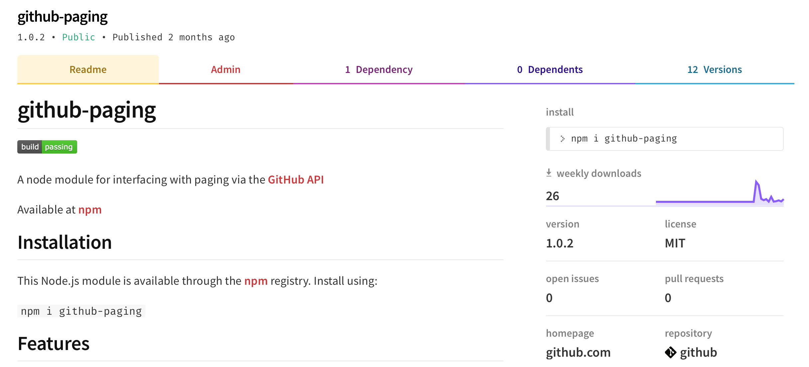
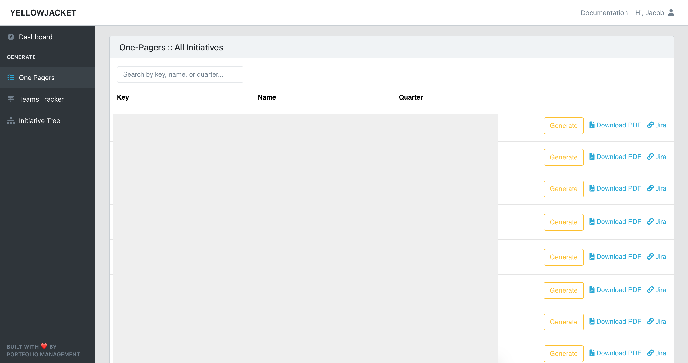
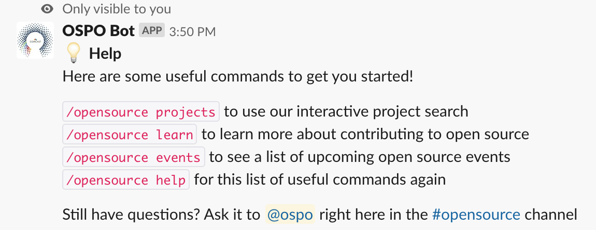
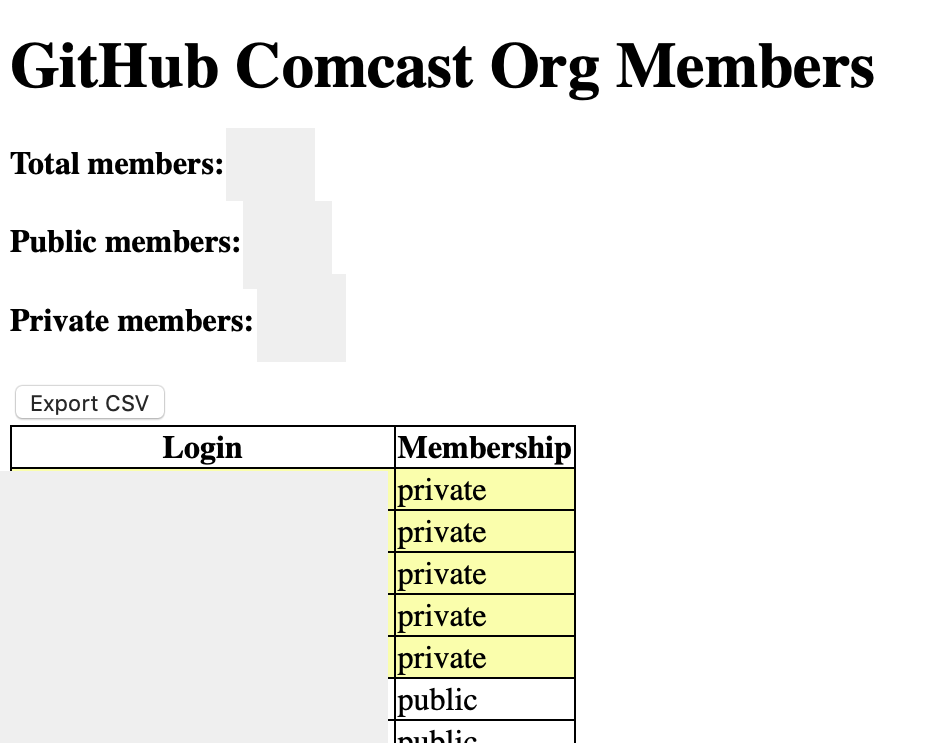
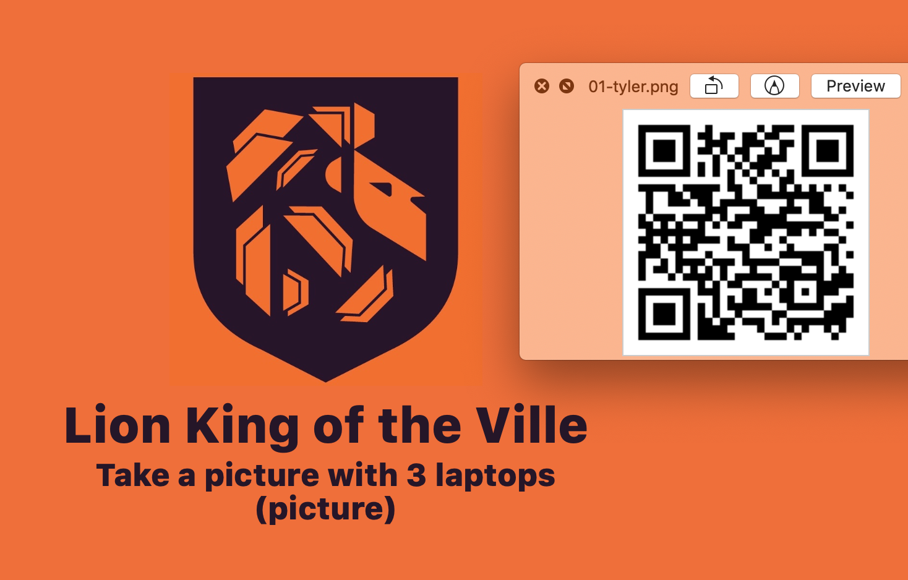
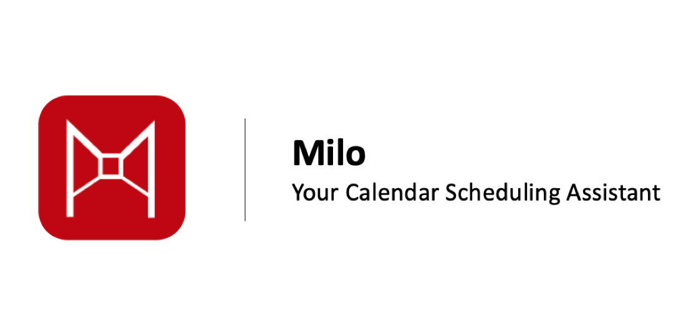

I'm a dedicated software developer with strong experience in building
back and front-end web apps. I am seeking projects to refine my skills
in user experience with team and personal projects. Check out some of my recent projects below!
My projects

I open-sourced a node module named github-paging which interfaces with paging via the GitHub API.
Available at NPM.

Yellowjacket is a tool built to manage quarterly planning initives across the technology
and product organization. Built in Ruby on Rails. Comcast proprietary.

The OSPO Bot is a back-end Slack bot to help welcome developers to channels
and help them find open source projects. Built in NodeJS. Comcast proprietary.

This web app was designed to help find developers not public on GitHub and
download a csv to reach out to them. Built in Ruby on Rails. Comcast proprietary.

Back end of QR code linked web-pages for Cedarville University event team
to hold campus-wide hunt with QR codes and challenges. Pages are hosted by this site.

Milo is an event and behavior analyzing scheduling app. Events are scheduled based on type and
previous behavior. Cedarville University Entrepreneur Pitch event winner. Built in Ruby on Rails.
Repo available here.
*check out my GitHub repos below, and to see my full list of skills,
download my resume